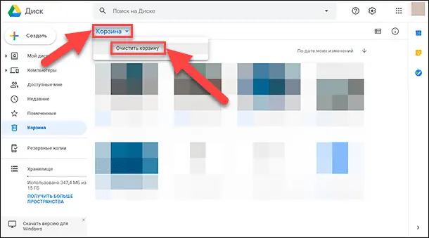

Как освободить место в «Google Диск»
Несмотря на значительный объем выделенного дискового пространства, как и любое другое устройство для хранения данных, «Google Диск» также постепенно заполняется, и доступное свободное место для хранение постепенно уменьшается. Однако есть несколько способов освободить занятое пространство в приложении «Google Диск» без непосредственного удаления важных данных, и в этой статье мы подробнее на них остановимся.
На персональном компьютере или «Mac» (операционные системы «Windows» и «macOS»)
Удаленное облачное хранилище, предоставляемое пользователям службой «Google», используется тремя сервисами: «Google Диском», «Gmail» и «Google Фото». Чтобы узнать, сколько свободного места осталось для записи данных, перейдите на компьютере в веб-браузере на страницу приложения «Google Диск», и в боковом меню в разделе «Хранилище» информация будет представлена диаграммой его наполненности и продублирована числовым значением использованного пространства из общего доступного объема.
Данные, которые занимают место в «Google Диск» представлены файлами раздела «Мой диск», в том числе различными «PDF-документами», изображениями и видеозаписями, содержимым «Корзины» диска, сообщениями электронной почты и прикрепленными к ним вложенными файлами, включая содержимое системных разделов «Спам» и «Корзина», а также пользовательскими фотографиями и видео композициями, сохраненными в исходном качестве. Поэтому для полноценной очистки занимаемого дискового пространства необходимо учитывать все возможные вложения, и в обязательном порядке уделять внимание их проверке.
Удаление неиспользуемых или ненужных файлов
Для удаления неиспользуемых файлов или документов, необходимости дальнейшего хранения которых больше нет, нужно воспользоваться следующим способом. В любом веб-браузере по выбору пользователя откройте приложение «Google Диск» и выполните вход с регистрационными данными собственной учетной записи, если такой вход в учетную запись не настроен автоматически.
Затем перейдите в боковом меню в раздел «Хранилище». Пользователям будет представлен полный список всех файлов, расположенных в хранилище приложения «Google Диск», и упорядочен по занятому объёму дискового пространства в порядке убывания. То есть самый большой файл будет располагаться в вверху списка, и далее список будет продолжаться по порядку к самому маленькому по объему файлу внизу, в зависимости от снижения размера файла.
Выберите файл, который вы хотите удалить. Чтобы выбрать несколько файлов, используйте стандартный метод выделения, выраженный в удержании в нажатом положении клавиши «Command» (в операционной системе «macOS» ) или «Ctrl» (в операционной системе «Windows» ) при нажатии каждого файла.
Перетащите выбранные файлы в папку «Корзина», расположенную в левом боковом меню приложения «Google Диск» (в нашем примере выбрано для перемещения в «Корзину» приложения семь файлов, имеющие после выделения синюю фоновую окраску).
Теперь перейдите в раздел «Корзина», нажав в боковом меню соответствующую кнопку. В главном окне приложения будет отображен упорядоченный перечень всех удаленных файлов.
Выберите из представленного списка файлы, которые были перемещены. Как и в предыдущем разделе, можно выбрать сразу несколько файлов одновременно, используя стандартные методы выделения.
Подробнее о способе удаления всех находящихся в «Корзине» файлов будет описано в следующем разделе «Полная очистка Корзины».
После выделения требуемого количества неиспользуемых или ненужных файлов (фон под названием файла измениться с белого на синий в подтверждение выбора пользователя) нажмите на кнопку «Удалить навсегда», выполненную в виде схематического изображения корзины и расположенную в правом верхнем углу главного окна раздела «Корзина». Приложение мгновенно отреагирует на команду удаления и отобразит предупреждающее сообщение «Удалить навсегда?», в окне которого нажмите на кнопку «Удалить» в подтверждение принятого решения.
Выбранные объекты будут стёрты из хранилища «Google Диск» без возможности дальнейшего восстановления. Обновление доступного освободившегося дискового пространства может занять до двадцати четырех часов с момента подтверждения процедуры удаления файлов.
Полная очистка «Корзины»
Осуществить очистку файлов, расположенных в хранилище удалённых объектов «Корзина» не составит особого труда. Обычное удаление файлов с «Google Диска» фактически не освобождает место в облачном хранилище до тех пор, пока указанные файлы не будут окончательно удалены из раздела «Корзина». И для полной очистки «Корзины» необходимо воспользоваться следующим способом.
Предполагается, что пользователи открыли веб-браузер, вошли в свою учетную запись «Google» и перешли на страницу приложения «Google Диск».
Нажмите в левой боковой панели меню на раздел «Корзина». Когда пользователи удаляют файлы со своего «Google Диска», они автоматически перемещаются в данный раздел приложения и хранятся там длительное время. Такой подход к удалению файлов реализован с целью уберечь объекты пользователей от случайного, непреднамеренного или ошибочного удаления, и предоставить пользователям возможность восстановить утраченные данные обратно в случае такой необходимости. Объём дискового пространства, занимаемый пользовательскими элементами, расположенными в «Корзине», считаются в общий размер использованного места на диске. Поэтому своевременная очистка «Корзины» позволит увеличить дополнительное полезное свободное пространство.
Если один или несколько файлов, временно размещенных в «Корзине», необходимо восстановить, то выделите требуемые элементы, щелкнув по ним один раз левой кнопкой мыши, а затем нажмите на кнопку «Восстановить из корзины» (круговая стрелка огибает часовой циферблат) в правом верхнем углу экрана. При отсутствии потребности в восстановлении удаленных файлов переходите к следующему шагу.
Нажмите в верхней части основного окна раздела на текстовую кнопку «Корзина», расположенную над списком файлов в левой части экрана, и во всплывающем меню, состоящем из одного раздела, выберите команду «Очистить корзину».
Всплывающее системное сообщение предупредит пользователей о невозможности отмены данного действия после его исполнения.
Нажмите в сообщении на кнопку «Очистить корзину», и все файлы в указанном разделе будут удалены с сервера, освобождая место для новых элементов.
Снижение качества фотографий в «Google Фото»
Как отмечалось нами ранее, пользовательские фотоснимки и видеосюжеты из приложения «Google Фото» занимают часть дискового пространства «Google Диск» при определенных настройках качества загружаемых материалов. Для уменьшения исходного качества публикаций и последующей экономии объема облачного хранилища выполните следующие действия.
Перейдите на страницу приложения «Google Фото» в любом веб-браузере по усмотрению пользователя. Если вход в учетную запись «Google» до сих пор выполнен не был, то следуйте инструкциям на экране для завершения процедуры авторизации в системе.
В левом верхнем углу экрана нажмите на кнопку «Главное меню», представленную в виде трех горизонтальных полос, вертикально расположенных друг над другом.
Всплывающая боковая панель отобразит все основные элементы управления приложения «Google Фото», в которой из представленных вариантов необходимо выбрать раздел «Настройки».
Если пользовательские фотографии сохранены в приложении «Google Фото» в исходном (самом высоком) качестве, то их совокупный объем будет учитываться в общем количестве занятого пространства на «Google Диске». Поэтому, чтобы избежать дополнительного потребления свободной не занятой дисковой области облачного хранилища, разумно изменить качество разрешения резервных копий фотографий с максимального режима «Исходный размер» на вариант «Высокое качество», который обеспечит отличное качество копий снимков при значительно меньшем размере файла.
Выберите «Высокое качество» (бесплатное неограниченное хранилище), чтобы сохраненные файлы не использовали место в «Google Диск» . Если данный режим уже выбран, то нет никаких причин что-либо менять.
Теперь нажмите на кнопку «Освободить место». Всплывающее системное сообщение уведомит, сколько путем сжатия фотографий и видео можно освободить места, уменьшив качество загружаемых композиций.
Изменения не затронут объекты, ранее загруженные на «Google Диск», но позволят обработать объекты, расположенные в других сервисах «Google», такие как «Blogger» и «Picasa».
Нажмите на кнопку «Сжать» для запуска процесса. «Google Фото» теперь будет снижать качество фотографий в автоматическом режиме. Для большинства пользователей такие изменения будут не заметны. Как только процесс сжатия будет завершен, освобожденное дисковое пространство будет готово к дальнейшему использованию.